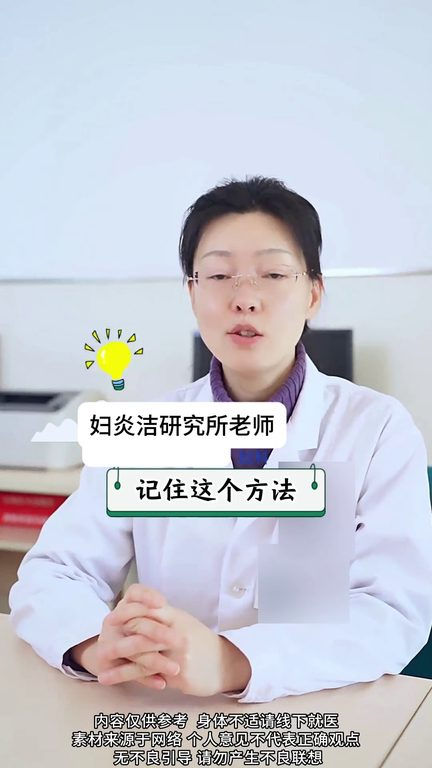
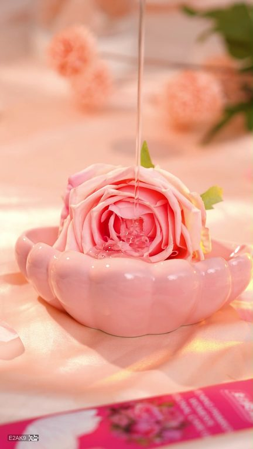
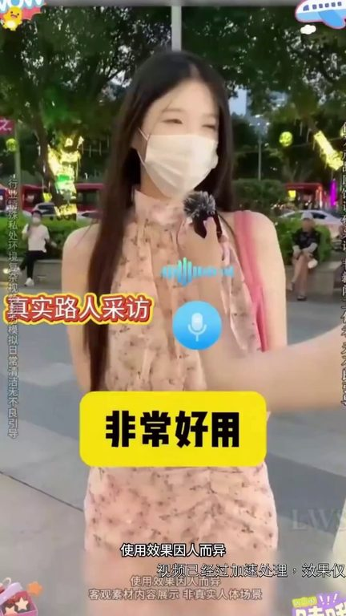

TOP 1 · 代表素材深度拆解
核心放量 稳健
视频为原始素材 HTTPS 链接；点击后加载，建议在网络环境良好时播放。
25.3万素材消耗
1.81%CTR
25.8%类目消耗占比
+0.11pp较类目均值
表现判断
该素材是类目内第 1 名，属于“核心放量”；CTR 高于类目均值。消耗体现承接规模，CTR 体现首屏与定向效率，两项应结合判断，不能仅以单指标下结论。
表达标签
口播三段式证据
开场钩子接以后下面干涩萎缩怎么办呢记住这个方法让你不发源往前绝筋以后我们身体的磁迹素会慢慢减少音道就会慢慢萎缩粘膜也变薄了
中段论证这时候我们就需要保养小花园可以试试这个肺炎节的凝胶如果你是这样用我或者你是干花用我我告诉你们私密真的好好保养私密的保养比你脸保养还重要我自己本人自用的希望自己的第二张脸像第一张脸保养的又年轻又瘦状态又好的话去用它但是你们记住一点私密东西比较乱用有很多东西砸牌子不要用一定要用靠谱的牌子
结尾转化但是你们记住一点私密东西比较乱用有很多东西砸牌子不要用一定要用靠谱的牌子大牌子不用非常好用非常好用我也是朋友推荐才买的没想到是真的有要是早点发现这个保障协业就好我也不想买可是它送的是正装现在你买一盒正装我再送你同款正装该送你同款正装还有这么多适用装到时候租租购用大半年的了
有效点
- CTR 1.81% 高于类目均值 1.70%，开场或人群指向具备点击优势
- 包含使用或实测表达，能够把抽象卖点转化为可感知证据
迭代动作
- 保留当前高效钩子，复制 3 个变量版本：人物、首句和首帧分别单变量测试
- 中段每 5–8 秒补一次画面变化或证据点，避免同景口播造成信息疲劳
- 复核功效、绝对化及价格稀缺措辞；增加适用边界和效果因人而异提示
合规关注

钩子建立 · 2.3s

场景/问题展开 · 17.0s

卖点证据 · 39.1s
转化收口 · 53.8s
查看完整口播摘要
接以后下面干涩萎缩怎么办呢记住这个方法让你不发源往前绝筋以后我们身体的磁迹素会慢慢减少音道就会慢慢萎缩粘膜也变薄了分泌物当然就会减少这个时候可能会出现干涩、疼痛、不舒服这时候我们就需要保养小花园可以试试这个肺炎节的凝胶如果你是这样用我或者你是干花用我我告诉你们私密真的好好保养私密的保养比你脸保养还重要我自己本人自用的希望自己的第二张脸像第一张脸保养的又年轻又瘦状态又好的话去用它但是你们记住一点私密东西比较乱用有很多东西砸牌子不要用一定要用靠谱的牌子大牌子不用非常好用非常好用我也是朋友推荐才买的没想到是真的有要是早点发现这个保障协业就好我也不想买可是它送的是正装现在你买一盒正装我再送你同款正装该送你同款正装还有这么多适用装到时候租租购用大半年的了